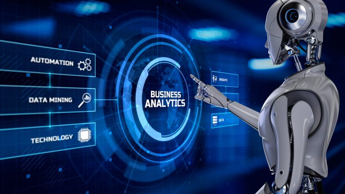
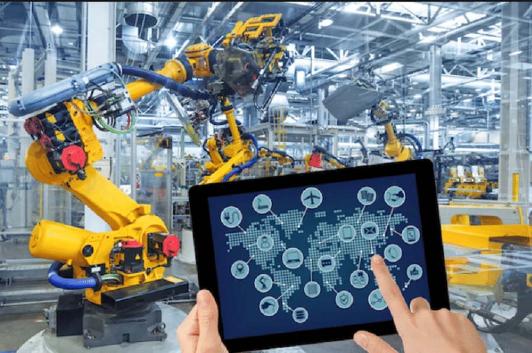
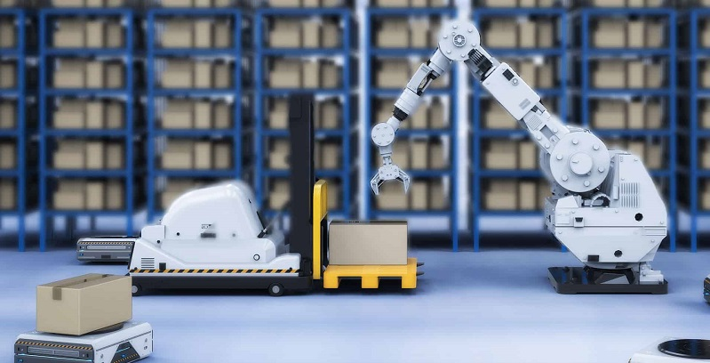

Bienvenido a Tecnologías de Automatización

Aquí encontrarás información sobre las últimas tendencias y aplicaciones en el campo de la automatización tecnológica.
Si hablamos de automatismos industriales es absolutamente indispensable definir qué es la automatización. Es una técnica mediante la cual se faculta tecnológicamente a una máquina o a un sistema. Deben poseer la habilidad de ejecutar ciertas actividades por sí mismos. El proceso se realiza sin intervención humana y tampoco se precisa ningún tipo de supervisión para que el autómata desarrolle su competencia de manera correcta.
En su explicación más básica, según aparece en el libro Automatismos Industriales, del profesor Juan Díaz, “se denomina automatismo al circuito que es capaz de realizar secuencias lógicas sin la intervención del hombre”.
¿Qué son las tecnologías de automatización?

Los procesos automatizados de la actualidad no pueden negar que tienen sus orígenes en los antiguos autómatas. Fueron concebidos como máquinas con una única: emular el aspecto y la forma de moverse de un ser vivo y animado, sin más pretensiones.
Hay que esperar hasta mediados del siglo pasado, para toparnos con un cambio radical en la concepción del automatismo. Llega de la mano de la empresa de automóviles Ford, inventora de la cadena de montaje.
Poco antes de 1950, S. Halder, ejecutivo de la compañía, hace suyo el término “automatización”. Para él, este proceso ha de ser acogido bajo una concepción global. La razón primordial es que tendrá que abarcar a todos los bocetos y modelos realizados. El fin principal será conseguir que todo el sistema de producción se vea automatizado.
El éxito es tan grande que pronto será implementado todos los sectores industriales, traspasando las fronteras estadounidenses. El resultado final conduce hacia la concepción de automatización que impera en la actualidad.
La automatización se refiere al uso de tecnología para realizar tareas sin intervención humana directa. En el contexto de las aplicaciones y sistemas, esto significa que ciertas funciones, procesos o tareas se llevan a cabo automáticamente, ya sea según un horario preestablecido o en respuesta a ciertos desencadenantes.
Utilidades de la automatización

Entramos en el terreno de la maquinaria. Los actuadores son todas aquellas máquinas que asumen la ejecución de los mandatos que emiten los PLC. Pueden ser de muy diversos tipos, desde complejos diseños de robótica a un simple pistón. Entre todos conforman la cadena de montaje.
Hemos conocido más de cerca el mundo de los automatismos industriales, pero no debemos olvidar que estos sistemas forman parte de nuestra vida cotidiana. Son los encargados de encender y apagar una bombilla o del funcionamiento de una cinta mecánica, por poner un par de ejemplos.
Las tecnologías de automatización pueden reducir los errores humanos, aumentar la eficiencia y ahorrar tiempo y dinero en una amplia variedad de industrias y aplicaciones. Algunas de las principales utilidades incluyen:
- Optimización de procesos empresariales
- Mejora de la productividad
- Reducción de costes
- Aumento de la precisión y confiabilidad
- Mejora de la experiencia del usuario
Más sobre automatización

También conocidos como autómatas programables. Se encargan de controlar todos los procedimientos industriales que funcionan a través de secuencias. Podríamos decir que son el cerebro de todo el proceso de producción y de la cadena de montaje. Acoge toda la información de cada sensor, analiza los datos y responde en consonancia con cada caso en particular.
Si quieres saber más sobre las últimas tendencias y aplicaciones de las tecnologías de automatización, te recomendamos visitar los siguientes recursos: